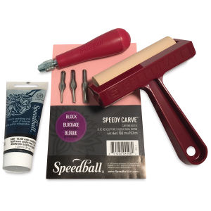
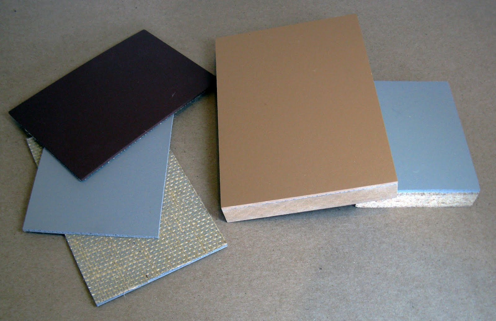
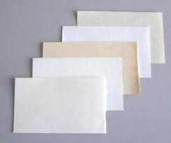

  
To complete this project you will need:
Piece of Linoleum or a block of wood
Pencil or Pen
Carving Tools
Brayer
Relief Ink
Paper
Baren or Spoon
Steps:
Start by drawing an image onto the linoleum or wood.
The image will end up reversing intself once printed, so draw it out mirrored so it comes out correctly. This is extremely important
Once the image is drawn onto the lino/wood, begin to carve out the negative spaces. The negative spaces are the areas that you want to stay white. The spaces you don't carve out will be the areas that print.
Now roll out some ink with the brayer.
Use the inked brayer to coat an even layer of ink onto the lino/wood. The ink needs to cover all the areas that have been left uncarved.
Place your paper onto the lino/wood and press down. Make sure that once the paper is placed it doesnt move around to ensure the image does not smudge.
Take a baren or spoon and rub the back of the paper pressing it down even harder into the lino/wood. This is called hand burnishing. Once again make sure the paper doesn't move around during this process.
Now without pulling the paper entirely off the lino/wood, slightly pull up one corner to expose the image. If the image appears to have fully printed onto the paper you can pull it off the rest of the way. If it appears spotted or it's not as dark as is preferred, place the corner back down and continue to burnish the image.